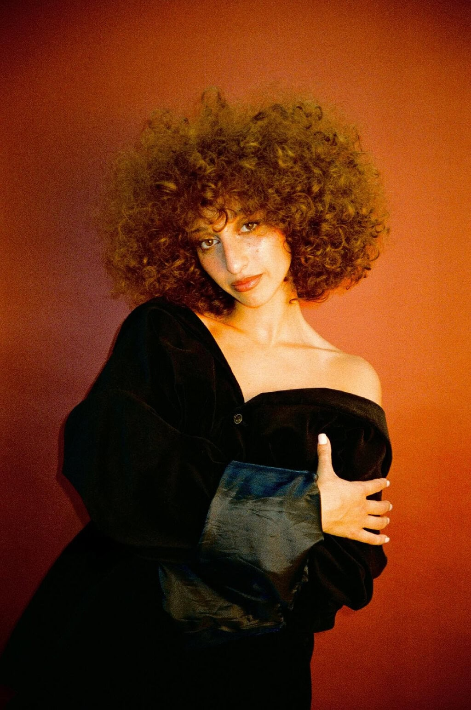
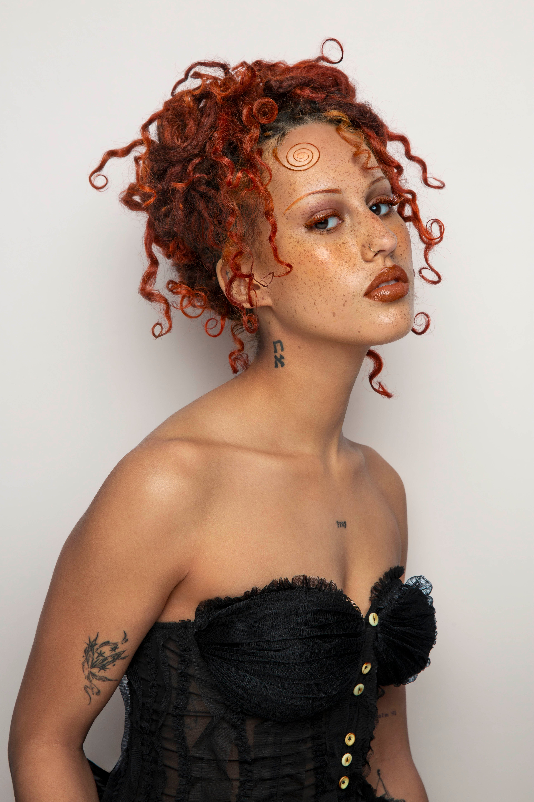
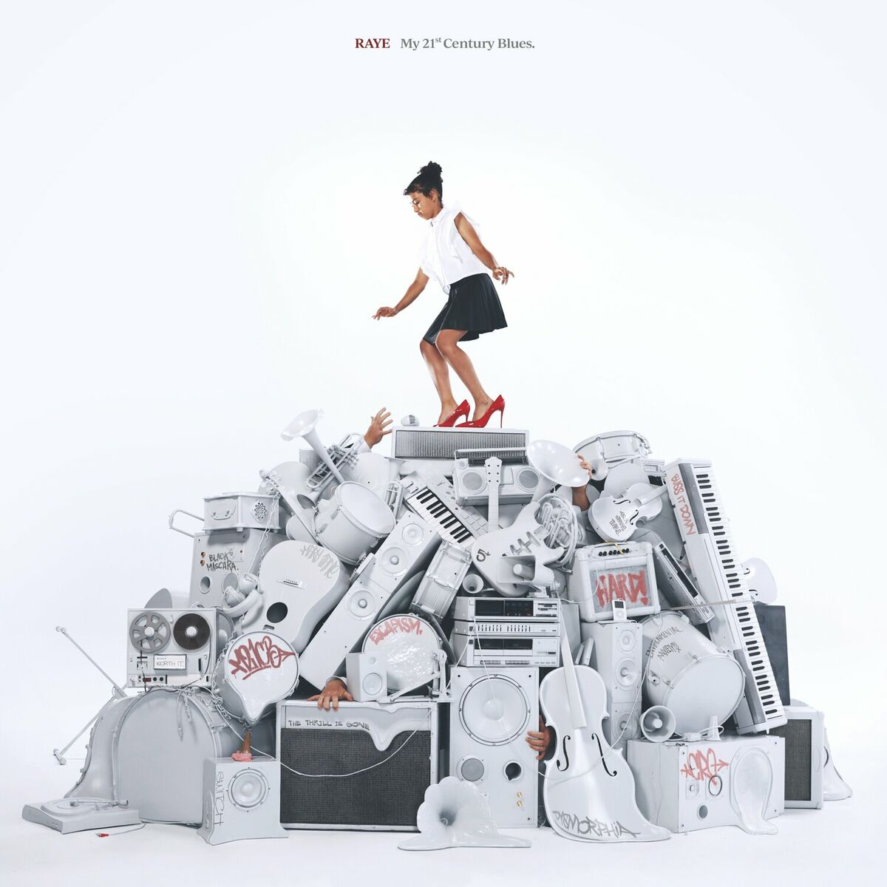
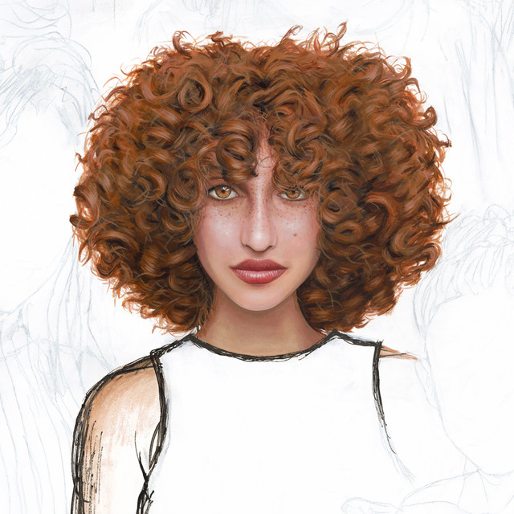
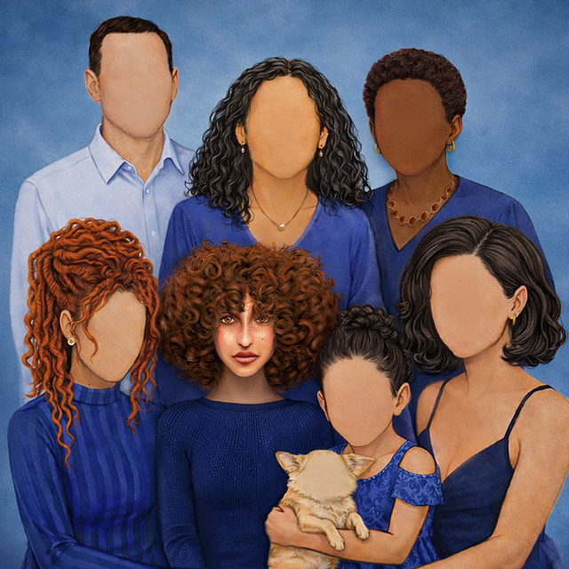
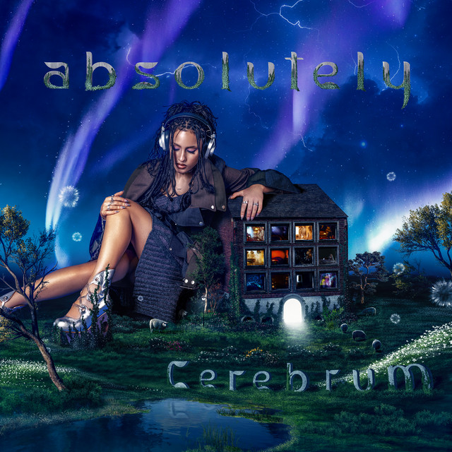

RAYE
The one who gained her independence.
From a SoundCloud EP at 17 to the Mercury Prize.
Enter RAYE's worldRAYE, Amma and Absolutely make very different music. This site follows each of them through their musical careers, records and songs that shaped them.
The one who gained her independence.
From a SoundCloud EP at 17 to the Mercury Prize.
Enter RAYE's world
The one who recently published her own music.
The middle sister - from the writing room to her own debut.
Enter Amma's world
The one who built her own world.
The youngest sister - from viral videos to a world of her own.
Enter Absolutely's worldEach artist has her own world, with her own colours and mood.
Scroll through the key moments of their musical careers. From their first uploads to their latest milestones.
Every album or EP opens into its tracks, and each track reveals the story behind it.
Save career chapters or songs from your favourite artist to "My Collection" and add your own thoughts.

EP · 2014

Studio Album · 2023

Studio Album · 2026
Explore the Record
EP · 2025

EP · 2025

Studio Album · 2026

Studio Album · 2023

Studio Album · 2026
Explore the Record